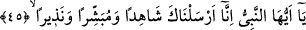
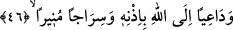

Yine Sâib şöyle demiştir:
Eğer devlet kuşu bizim tuzağımıza düşerse,
Hedefimiz yüksek olduğu için onu serbest bırakırız.
Hâfız der ki:
Ufuklardan ufuklara kadar zulüm askeri doludur ama,
Ezelden ebede kadar fırsat dervişlerindir.
45. Ey Peygamber! Biz seni hakikaten bir şâhid, bir müjdeleyici ve bir uyarıcı
olarak gönderdik.
“Ey Peygamber!” Bu nida bir keramet/değer verme ve tazim nidasıdır. Çünkü şerefli
insana şerefli lakapla nidâ edilir. “Ey Âdem” ve benzeri nidalar gibi özel isimle
yapılan nidâ değildir.
“Biz seni” azametimizle seni tasdik ve tekzip ettiklerine dair ümmetin hakkında
şehâdetin takdir olunmuş olarak “hakikaten bir şâhid” gönderdik. Sen bu şâhidliği,
hükümde âdil şahidin sözünün kabul edilmesi gibi kıyamet günü makbul olarak eda
edersin. Biz seni îman ve taat ehlini cennetle, muhabbet ehlini rü’yetle/Allâh’ı görmekle
“müjdeleyici ve” küfür ve isyan ehlini cehennemle, gaflet ehlini hicabla/Hakk’ın
cemalinden perdelenmekle “uyarıcı olarak gönderdik.”
Şehâdet/şâhidlik etmek, gözün veya basîretin müşâhedesi/görmesi ile hâsıl olan
ilimden dolayı sâdır olan sözdür. Hz. Peygamber (s.a.) ancak şâhidliği edâ ettiği zaman
şâhid olur. Bu ise gönderilme zamanından sonra meydana gelecektir.
46. Ve izniyle, Allâh’a dâvetçi ve nûr saçan bir kandil olarak (gönderdik).
“Ve izniyle,” yâni kolaylaştırmasıyla “Allâh’a” yâni Allâh’ı, birliğini ve diğer îman
edilmesi vâcib olan sıfatlarını ve fiillerini ikrar etmeye “bir dâvetçi” olarak gönderdik.
Burada diğer nebîler ve rasuller arasında halkı Allâh’a dâvet etme rütbesinin
Peygamberimiz (a.s.)’a tahsis edildiğine işâret vardır. Çünkü diğer peygamberler halkı
cennete dâvet etmekle me’mur idiler. Yine Hz. Peygamber (a.s.) halkı kendine değil
Allâh’a dâvet etmiştir. Çünkü O, rubûbiyetle değil kullukla övünmüştür. Bu, O’nun
Rabbi’ne dâvetinin sahih olması içindi. Kim onun dâvetine icabet ederse, bu dâvet ona